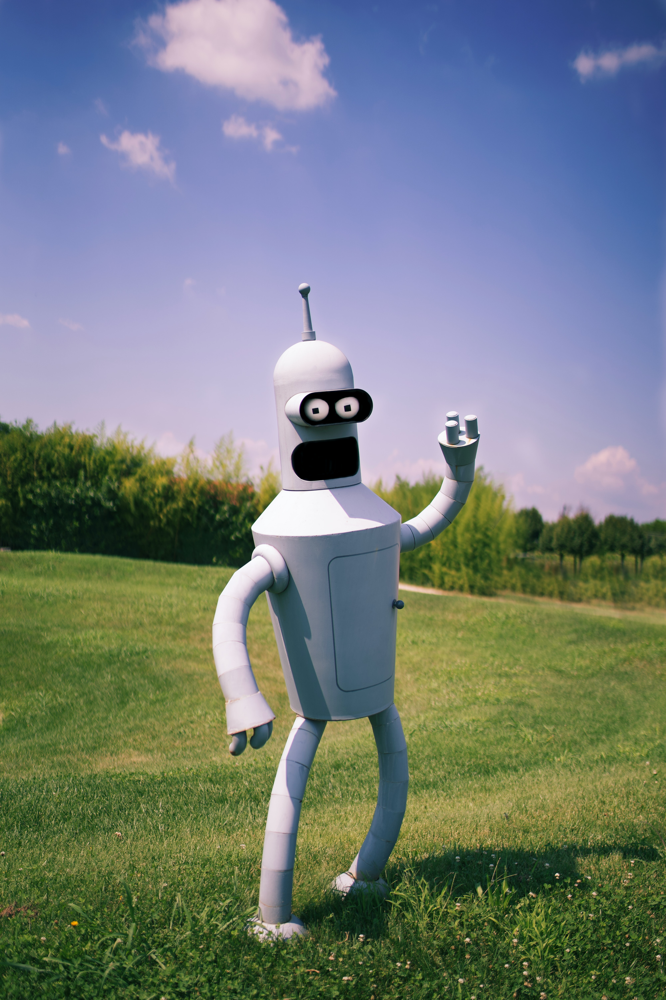

Family Guy is an American animated sitcom created by Seth MacFarlane for the Fox Broadcasting Company. The series premiered on January 31, 1999, following Super Bowl XXXIII, with the rest of the first season airing two months later, beginning on April 11, 1999. The show centers around the Griffins, a dysfunctional family consisting of parents Peter and Lois, their children, Meg, Chris, and Stewie, and their anthropomorphic pet dog, Brian. Set in the fictional city of Quahog, Rhode Island, the show exhibits much of its humor in the form of metafictional cutaway gags that often lampoon American culture. 
The family was conceived by MacFarlane after he developed two animated films, The Life of Larry and Larry & Steve. MacFarlane redesigned the films' protagonist, Larry, and his dog, Steve, and renamed them Peter and Brian, respectively. MacFarlane pitched a seven-minute pilot to Fox in December 1998, and the show was greenlit and began production. Family Guy's cancellation was announced shortly after the third season had aired in 2002, with one unaired episode eventually premiering on Adult Swim in 2003, finishing the series' original run. Favorable DVD sales and high ratings from syndicated reruns since then convinced Fox to revive the show in 2004; a fourth season began airing the following year, on May 1, 2005.